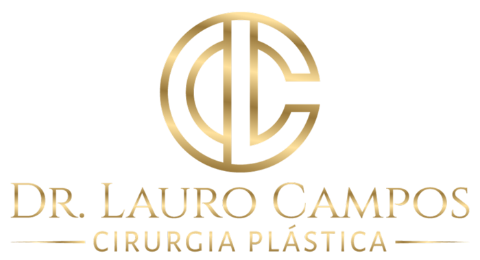

Lipoabdominoplastia
Para diminuir a cintura, retirar o excesso de gordura e corrigir sobra de pele e flacidez abdominal.
Cirurgia Plástica · Salvador
Mamas, abdome, glúteos e lipoaspiração, com planejamento individual e acompanhamento próximo, do primeiro encontro até a alta.

O cirurgião
O Dr. Lauro Campos é cirurgião plástico, membro da Sociedade Brasileira de Cirurgia Plástica (SBCP), com atuação nas áreas estética e reparadora da especialidade.
Formou-se em Cirurgia Geral pela Santa Casa de Misericórdia da Bahia (Hospital Santa Izabel) e especializou-se em Cirurgia Plástica pelo Hospital das Clínicas (HUPES), em Salvador. Seu foco é o contorno corporal, sempre priorizando segurança, naturalidade e tecnologia.
Procedimentos
A indicação é sempre definida em consulta, depois de uma avaliação cuidadosa dos seus objetivos e da sua anatomia.
Para diminuir a cintura, retirar o excesso de gordura e corrigir sobra de pele e flacidez abdominal.
Para esculpir o corpo, realçando o contorno muscular com naturalidade e precisão.
Para tratar a flacidez e a queda das mamas, com ganho de volume e projeção.
Ganho de volume e projeção, com planejamento de proporções e expectativa realista.
Redução do volume mamário com foco em conforto, postura e harmonia corporal.
Correção de sobras de pele após grande perda de peso, em etapas planejadas.
Cada indicação cirúrgica é definida em consulta, após avaliação médica individualizada. Resultados variam de pessoa para pessoa.
Caminho da transformação
Da primeira consulta à alta, o acompanhamento é próximo, com concierge, grupo multidisciplinar no pós-operatório e revisões programadas.
Começar pela consultaAvaliações no Google
Extremamente competente tecnicamente e, acima de tudo, muito atencioso com seus pacientes. Transmite segurança, explica tudo com clareza e demonstra verdadeiro cuidado em cada atendimento.
Desde a primeira consulta me senti acolhida, segura e totalmente confiante na escolha que fiz. O profissionalismo, a atenção, a paciência em esclarecer todas as minhas dúvidas e o carinho no pré e pós-operatório fizeram toda a diferença.
Ótimo profissional e pessoa incrível! […] Humano, detalhista, atencioso […] e extremamente competente. Indico sem nem pensar duas vezes!
Sou grata pela forma como você e sua equipe cuidaram de mim […] Obrigado por me ouvir e por todo o cuidado durante o procedimento.
Consultório
Caminho das ÁrvoresAlameda das Espatódeas, 567
Salvador · BA · CEP 41820-460
Perguntas frequentes
Você conversa com o Dr. Lauro sobre seus objetivos, passa por avaliação e conhece a concierge. Nesse encontro são apresentados o plano de tratamento e o orçamento, e são solicitados os exames pré-operatórios.
A indicação é feita apenas depois da avaliação médica individual. O plano considera sua anatomia, sua saúde e o que é realista para o seu caso.
No segundo encontro, cerca de 15 dias antes da cirurgia, quando também são definidos os detalhes do procedimento e passadas as orientações pré-operatórias.
Há um grupo multidisciplinar de acompanhamento no WhatsApp e revisões programadas: presencial na 1ª semana, nas 2ª e 3ª semanas e depois mensais ou quinzenais até a alta, por volta do 4º mês.
Na Alameda das Espatódeas, 567, Caminho das Árvores, Salvador. O atendimento é de segunda a sexta, das 8h às 18h.
Seu sonho começa com uma conversa
Atendimento de segunda a sexta, das 8h às 18h, no Caminho das Árvores.
Agendar pelo WhatsApp